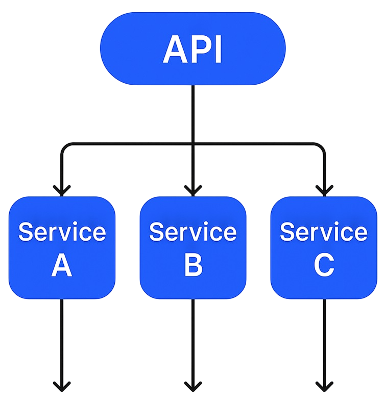
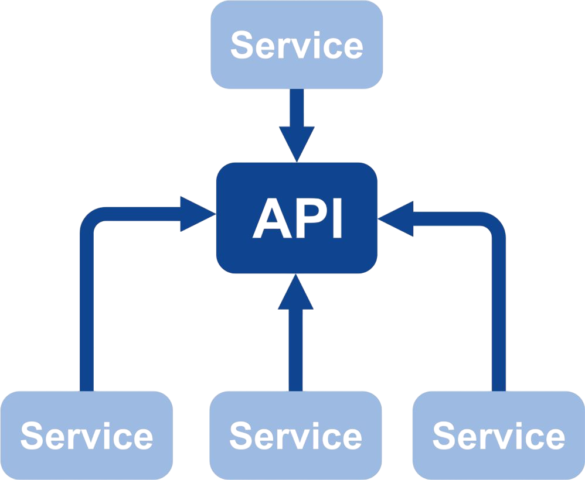
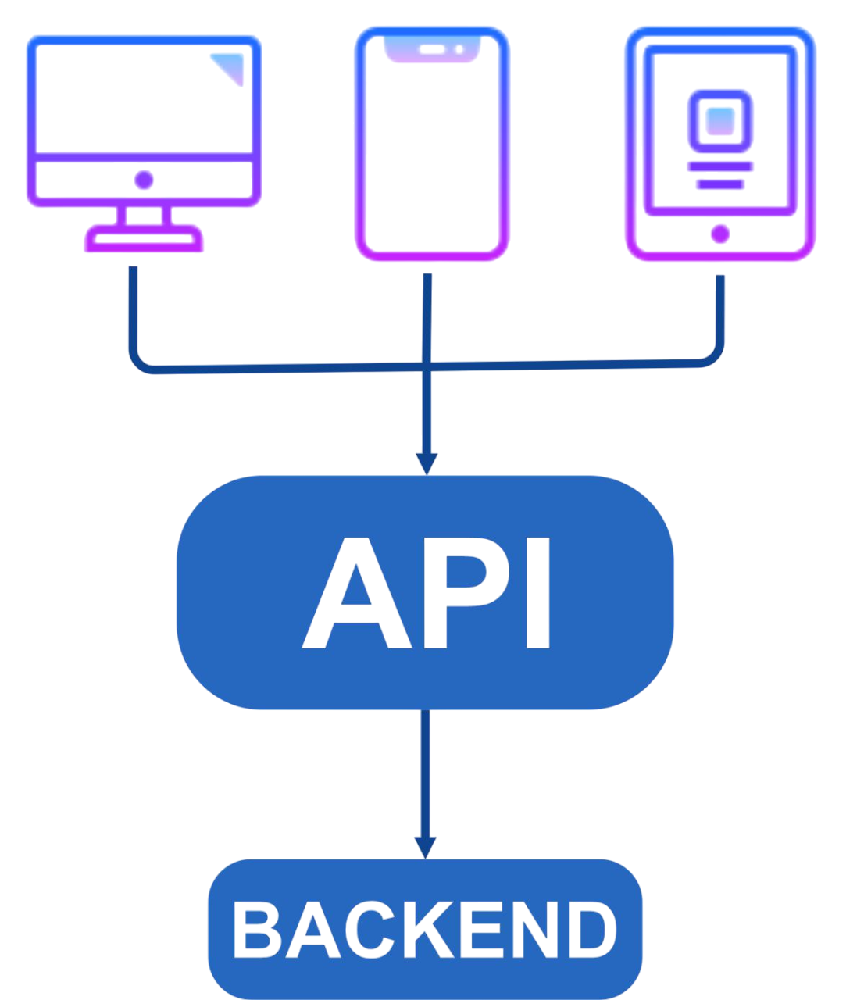
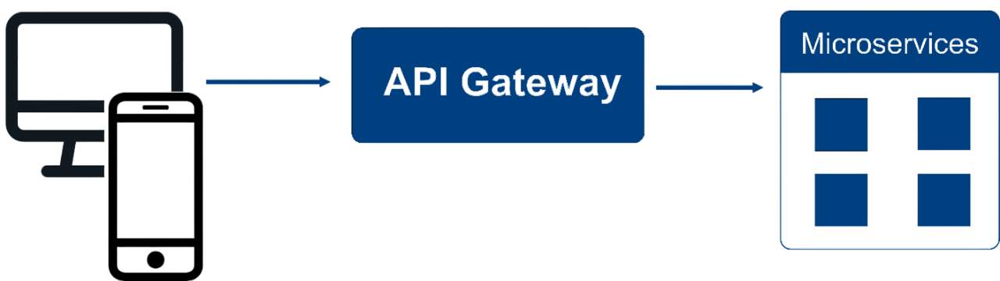
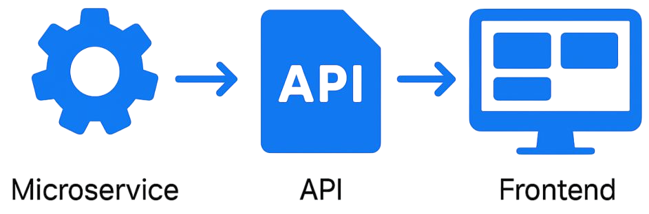
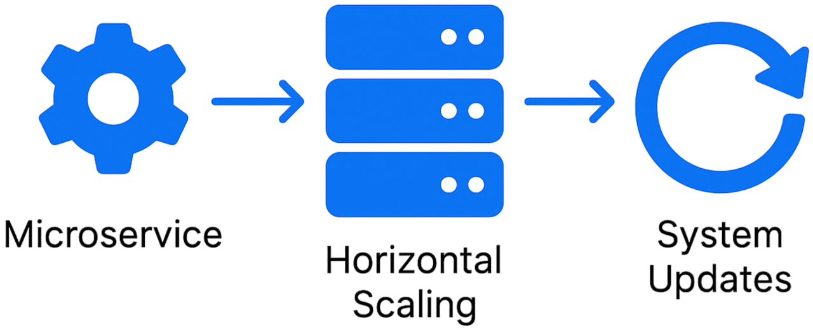

What is MACH?
MACH is an architectural approach that makes digital solutions flexible, scalable, and adaptive.
Microservices
independent services that enhance development flexibility
API- first
seamless interaction between system components
Cloud-native
cloud infrastructure that enables scalability
Headless UI
separation of the frontend from the backend for a universal user experience
Microservices
What are microservices
An architectural style where applications are composed of independetn services

Advantages
Flexibility
Reliability
Scalability
API-first: Seamless Service Interaction
What is it
API-first means that all functions are accessible via APIs, which connect different components
Example
- Amazon easily integrates its Alexa voice assistant via API
- Any device (mobile, web, IoT) can retrieve data
- Fast integration of new technologies without modifying the core system

Cloud-native: Cloud Infrastructure
What is it?
Cloud-native means that the system operates in the cloud instead of on local servers.
Examples
- Spotify stores music in the cloud
- Automatically scales its capacity during high traffic
- Ensures stable streaming
Advantages
- High speed performance
- Flexibility and scalability
- Data security


Headless: Flexible Interface
What is it?
Headless means that the UI is separated from the backend and interacts with it via an API
Examples
- Nike uses headless eCommerce
- The website, mobile app, and kiosks all work with a single API
- Content is managed through a headless CMS
Advantages
- Universal UI across different platforms
- Ease of interface updates
- Data security
- Flexible content management

Algorithm of MACH Architecture Operation:
Principles of Interaction
Example of MACH in eCommerce Platform
1. Data Request (Client Request Initiation)

Key Points
- API-first → The API is designed first, followed by service and interface integration.
- Frontend is independent from the backend → Different interfaces can connect (web, mobile apps, voice assistants).
2. Request Processing (Microservices Architecture)
API Gateway

product catalog
payment processing
user management
Key Points
- Microservices → Each service is independent and autonomous, meaning failures in one service do not break the entire system.
- Separation of responsibilities → Helps manage project complexity since services remain independent.
3. Data Access (Cloud Storage and Processing)
Key Points
- Cloud-native → The platform operates in the cloud, ensuring reliability and flexibility.
- Storage flexibility → Allows the use of various databases and distributed storage solutions.
4. Client Response Processing (Headless Architecture)

Key Points
- Headless → The UI is independent, allowing multiple frontends for a single backend.
- UI flexibility → Developers can use various technologies (React, Vue, Angular, Flutter).
Scaling and System Updates

Key Points
- Horizontal scaling → Servers for individual microservices can be increased as needed.
- Fast updates → Developers can roll out new features without affecting the entire system.
Why Businesses Should Embrace MACH Architecture
Comparing MACH vs Monolithic Architecture
| Characteristics | Monolithic | MACH |
| structure | Single application | Independent services |
| Updates | Labor-intensive | Localized changes |
| Scalability | Limited | High |
| Integration | Complex | API-first |
Where to apply
MACH
- Rapid feature updates
- High-load environments
- eCommerce, SaaS, AI platforms
Monolithic
- Internal System
- Small Projects
- No comples integration